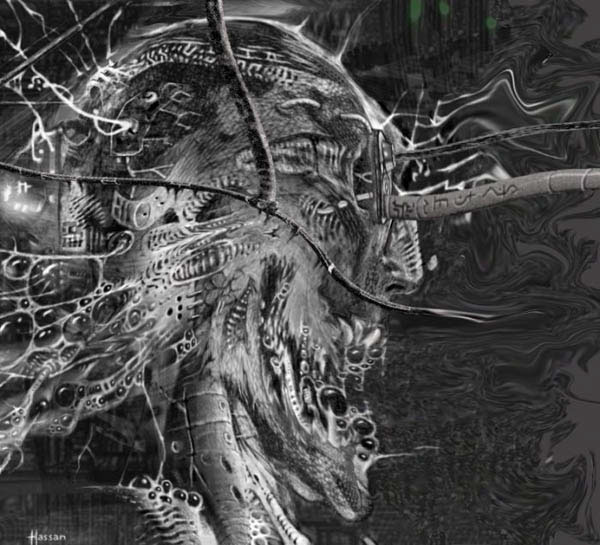
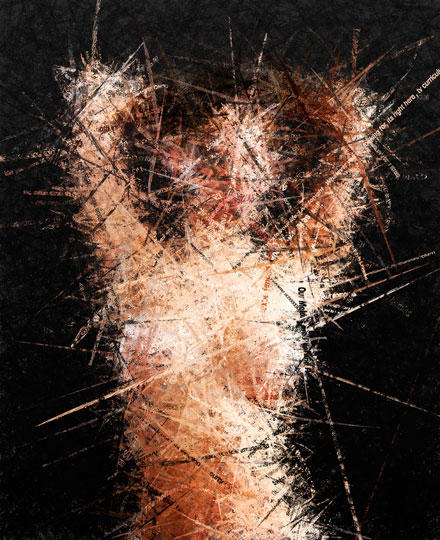
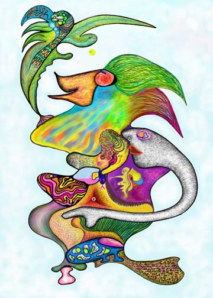
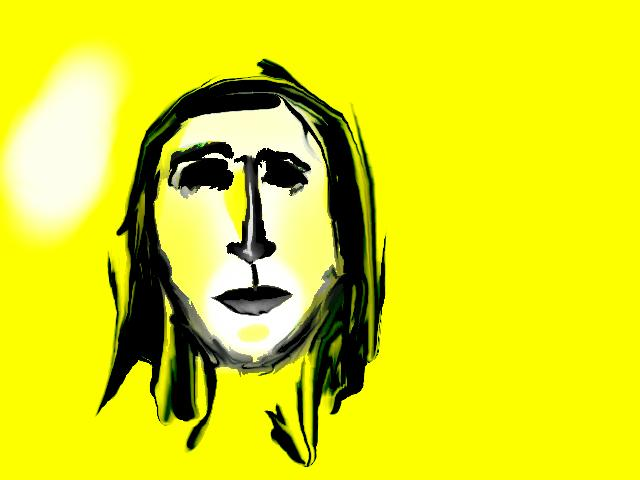

IMAGES OF THE DAY 55
12/21/2022 - 12/31/2022
Guest Art
Adam's Rib
by Sam Bahreini
12/21/2022
Click image to access artist's full exhibit

Guest Art
Saturnia with Renee
by B. Felician Siebrecht
12/22/2022
Click image to access artist's full exhibit

Guest Art 
Android Ecstasy
by Rob Hassan
12/23/2022
Click image to access artist's full exhibit
Fantasies of Spam Email 
Whatever You Are Looking For, It's Right Here
by Adam Harvey
12/24/2022
Click image to access artist's full exhibit
Algorithmic Art
Three Stars, No. 1
by Jurgen Schwietering
12/25/2022
Click image to access artist's full exhibit

Photoart
#425
by Teddynash
12/26/2022
Click image to access artist's full exhibit

Creative Creatures 
The Poet
by Bjoern Daempfling
12/27/2022
Click image to access artist's full exhibit
Mouse-Drawn Art 
Tulare County 1
by D. L. Zimmerman
12/28/2022
Click image to access artist's full exhibit
States of Mind
Turbine
by Giuseppe Genna
12/29/2022
Click image to access artist's full exhibit

Mental Landscape
Venus Comb
by Michael Frank
12/30/2022
Click image to access artist's full exhibit

Retrospective 2004-2010
Untitled 01
by Anil CS Rao
12/31/2022
Click image to access artist's full exhibit

BACK TO IMAGES OF THE DAY 54
NEXT